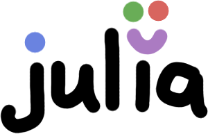

Experiences with Julia for astronomy research
March 3, 2015

Last year, I discovered the programming language Julia. And to my surprise (coming from someone who thought that Python was great and that learning something else would be a waste of time), I’ve really enjoyed using it. What’s been even cooler, though, is following the development of the language over just the past few months and seeing how much it has improved and how excited everyone is about it. I thought I’d write this to add my voice to those who are excited to see where it’s going, but this time from the perspective of a student astronomer who has started using it in their research. Below are a few of my experiences with Julia.
It’s easy to write
At least in my undergraduate degree, there was little in the way of formal programming training. I suspect this is true for many astronomers. I had a little intro to Matlab, one workshop on statistics in R, and apart from that I ended up teaching myself Python. Python is a fantastic language to learn and I like it a lot, so Julia’s similarity to Python was a big draw for me. Julia is easy to write, doesn’t have too many “gotchas”, and the command line interface (REPL) is pretty cool too. I also like the IJulia notebook, which borrows the excellent IPython infrastructure to make something that’s great for interactive work and presenting to others.
I don’t like Fortran and C
I never expected this, but I’ve ended up as a theoretical astrophysicist. I don’t work much with actual observations (yet). And so much of my work currently involves building models of things. Speed is often important, and the usual approach in astronomy would be to work in Fortran or C.
Fortran and C are great! After all, they’ve stuck around for a long time. But I’m not quite technically-minded enough to dive into the internals of a chunky piece of low-level code. I’ve tried before and it never goes well. As a scientist and not someone who considers themselves a fantastic programmer, I’d rather be thinking about what my code is going to do instead of worrying about memory management or how to write things to squeeze out every last drop of performance.
Julia has done two things for me: firstly, it’s enabled me to write fast and efficient code without too much hassle. But secondly (and this is pretty useful) it’s been very clear about where I do need to care about these things, and what kinds of caring I need to do. The Performance Tips section of the manual has cleared up a few things for me. Usually there is a very logical explanation for why something might be slower than expected: for example, because the compiler doesn’t know how to store a particular structure efficiently in memory, or because it can’t figure out what type something is and must use a more generic version of a particular function. I appreciate that it’s made me think a little more about this, while not throwing me in the deep end.
The type system is really lovely
Types are important in Julia, but I like the way I don’t have to think about them until I want to. More importantly, though, the type system is the foundation of multiple dispatch, which kind of blew my mind when I realised how well it worked.
Multiple dispatch eliminates a lot of the cognitive overhead required when doing things to different data types
Coming from Python, where I had had a brief introduction to object-oriented programming, multiple dispatch seemed a bit weird at first. Isn’t it just like making objects but then writing the methods somewhere else? But it’s more than that. I think the key thing that makes multiple dispatch really nice to work with is that it encourages you to condense your functions to single concepts. By coming up with a single concept for each thing you want to do, and then writing little variations to handle each data type, I find that I have to think less about actually doing stuff. If I were more naïve, I’d be trying to write a million different functions to process particular special cases, and forgetting which one to call. Julia makes this type of thing simple. Want to solve some system of equations you’ve come up with? Write a function called solve() and then solve() the system. But now you can write solve() in different ways for different things, and so solve() becomes one super-function that you know you can call the same way. That makes it easier to keep track of things, and that’s what I mean by less cognitive overhead.
For example, in my modelling work, I use a number of different equations of state for various materials. Some of these equations of state might be calculated directly from a function, while others might come from a table of values or a numerical inversion. By structuring the types representing these equations appropriately, I can handle them all with exactly the same function and know that it will do the same thing. Then I just write that function multiple times, treating each equation differently. The neat thing about this is how, a couple of times, I’ve had to make changes to my code that I thought would be difficult. Instead, it turned out to be a simple matter of adding a new type, choosing an appropriate spot in the hierarchy, and maybe altering a couple of functions to account for the new case or to make them more generic. Then everything else just worked. Cool!
Single-dispatch object-oriented programming is another way to think about this. But this just makes more sense to me for some reason. I think it’s because in astronomy (and probably science in general), it makes sense to have many different types or sources of data, which you want to process using similar concepts. That’s in opposition to the object-oriented approach, where you have objects that carry their own ways of working.
It cares about interfacing with Python
The PyCall package makes using Python code from Julia really easy. At least in astronomy, this is a massive win. Established libraries like Astropy are very useful to have access to. I don’t use IDL, another very popular astronomy programming language, so I can’t speak to the ease of interaction there, but for my work it’s great.
No-one’s perfect
There’s one big disadvantage to using a language that is still in its infancy like this, and that’s that everything is still in a state of flux. There are few packages specifically for astronomy and none of them are useful to me anyway. There are some bugs, a couple of oddities, and of course just some features that everyone wants but that aren’t here yet. If you want to leave your code untouched for eternity, Julia isn’t for you. It will be updated and things will break. The community seem pretty friendly, though. I wish I knew enough to contribute a little bit more, but I’d mostly be afraid of mucking stuff up.
I suspect that a lot of what I’m discovering to be good about Julia is stuff I would have discovered in any language. But it has some really unique features that I think have let me write some quite nice code for my research. Like I said, I’m not an amazing programmer, so anything that makes me feel like I can write more easily is very helpful. Here’s to Julia helping me be productive over the remainder of my PhD! That is, if I can stop writing blog posts about the language and actually go and use it for a while.
Julia tutorial
I ran an introductory Julia tutorial for the Institute of Astronomy on March 16th. You can read a summary of the tutorial, and download the files, here.
More about Julia
If you are interested in Julia, the following resources may be helpful.
- The Julia homepage, downloads, manual, and packages;
- Julia Express, a comprehensive cheatsheet by Bogumił Kamiński;
- David Sanders’ Julia tutorial from SciPy 2014;
- and “Scientific computing’s future: Can any coding language top a 1950s behemoth?” - an Ars Technica article about three challengers to Fortran, of which Julia is one.